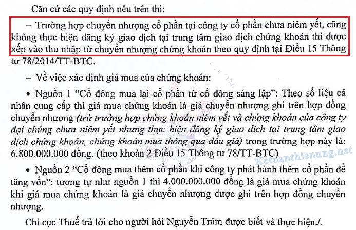

Quy định về thuế TNDN chuyển nhượng chứng khoán: Cách tính thuế TNDN chuyển nhượng cổ phiếu, trái phiếu, cổ phần; Cách kê khai thuế TNDN chuyển nhượng chứng khoán; Thuế suất thuế TNDN chuyển nhượng chứng khoán, cổ phiếu, cổ phần ...
Theo điều 15 Thông tư 78/2014/TT-BTC quy định về thuế thu nhập doanh nghiệp từ chuyển nhượng chứng khoán:
1. Phạm vi áp dụng thuế TNDN từ chuyển nhượng chứng khoán:
Thu nhập từ chuyển nhượng chứng khoán của doanh nghiệp là thu nhập có được từ việc chuyển nhượng cổ phiếu, trái phiếu, chứng chỉ quỹ và các loại chứng khoán khác theo quy định.
- Trường hợp doanh nghiệp thực hiện phát hành thêm cổ phiếu để huy động vốn thì phần chênh lệch giữa giá phát hành và mệnh giá không tính vào thu nhập chịu thuế để tính thuế TNDN.
- Trường hợp doanh nghiệp tiến hành chia, tách, hợp nhất, sáp nhập mà thực hiện hoán đổi cổ phiếu tại thời điểm chia, tách, hợp nhất, sáp nhập nếu phát sinh thu nhập thì phần thu nhập này phải chịu thuế TNDN.
- Trường hợp doanh nghiệp có chuyển nhượng chứng khoán không nhận bằng tiền mà nhận bằng tài sản, lợi ích vật chất khác (cổ phiếu, chứng chỉ quỹ...) có phát sinh thu nhập thì phải chịu thuế TNDN.
-> Giá trị tài sản, cổ phiếu, chứng chỉ quỹ…được xác định theo giá bán của sản phẩm trên thị trường tại thời điểm nhận tài sản.
-------------------------------------------------------------------------
2. Cách tính thuế TNDN chuyển nhượng chứng khoán:
| Thuế TNDN phải nộp | = | Thu nhập tính thuế từ chuyển nhượng chứng khoán | X | 20% |
Trong đó:
Thu nhập tính thuế từ chuyển nhượng chứng khoán trong kỳ được xác định bằng giá bán chứng khoán trừ (-) giá mua của chứng khoán chuyển nhượng, trừ (-) các chi phí liên quan đến việc chuyển nhượng.
| Thu nhập tính thuế từ chuyển nhượng chứng khoán | = | Giá bán chứng khoán | - | Giá mua của chứng khoán chuyển nhượng | - | Các chi phí liên quan |
Cách xác định như sau:
a) Giá bán chứng khoán được xác định như sau:
+ Đối với chứng khoán niêm yết và chứng khoán của công ty đại chúng chưa niêm yết nhưng thực hiện đăng ký giao dịch tại trung tâm giao dịch chứng khoán thì giá bán chứng khoán là giá thực tế bán chứng khoán (là giá khớp lệnh hoặc giá thỏa thuận) theo thông báo của Sở giao dịch chứng khoán, trung tâm giao dịch chứng khoán.
+ Đối với chứng khoán của các công ty không thuộc các trường hợp nêu trên thì giá bán chứng khoán là giá chuyển nhượng ghi trên hợp đồng chuyển nhượng.
b) Giá mua của chứng khoán được xác định như sau:
+ Đối với chứng khoán niêm yết và chứng khoán của công ty đại chúng chưa niêm yết nhưng thực hiện đăng ký giao dịch tại trung tâm giao dịch chứng khoán thì giá mua chứng khoán là giá thực mua chứng khoán (là giá khớp lệnh hoặc giá thỏa thuận) theo thông báo của Sở giao dịch chứng khoán, trung tâm giao dịch chứng khoán.
+ Đối với chứng khoán mua thông qua đấu giá thì giá mua chứng khoán là mức giá ghi trên thông báo kết quả trúng đấu giá cổ phần của tổ chức thực hiện đấu giá cổ phần và giấy nộp tiền.
+ Đối với chứng khoán không thuộc các trường hợp nêu trên: giá mua chứng khoán là giá chuyển nhượng ghi trên hợp đồng chuyển nhượng.
c) Chi phí chuyển nhượng là các khoản chi thực tế liên quan trực tiếp đến việc chuyển nhượng, có chứng từ, hóa đơn hợp pháp.
Chi phí chuyển nhượng bao gồm:
Chi phí để làm các thủ tục pháp lý cần thiết cho việc chuyển nhượng;
Các khoản phí và lệ phí phải nộp khi làm thủ tục chuyển nhượng;
Phí lưu ký chứng khoán theo quy định của Ủy ban chứng khoán Nhà nước và chứng từ thu của công ty chứng khoán;
Phí ủy thác chứng khoán căn cứ vào chứng từ thu của đơn vị nhận ủy thác;
Các chi phí giao dịch, đàm phán, ký kết hợp đồng chuyển nhượng và các chi phí khác có chứng từ chứng minh.
----------------------------------------------------------------
Doanh nghiệp có thu nhập từ chuyển nhượng chứng khoán thì khoản thu nhập này được xác định là khoản thu nhập khác và kê khai vào thu nhập chịu thuế khi tính thuế TNDN.
Xem thêm: Cách tính thuế thu nhập doanh nghiệp
Xem thêm: Các khoản thu nhập khác chịu thuế TNDN
--------------------------------------------------------------------
Ví dụ: Trong kỳ tính thuế năm X, Cty Kế toán Diệu Tâm có phát sinh:
- Lỗ từ hoạt động sản xuất phần mềm được ưu đãi thuế là 1 tỷ đồng.
- Lãi từ hoạt động kinh doanh máy tính không thuộc diện ưu đãi thuế là 1 tỷ đồng.
- Lãi từ hoạt động chuyển nhượng chứng khoán (thu nhập khác của hoạt động kinh doanh) là 2 tỷ đồng.
Trường hợp này Cty được lựa chọn bù trừ giữa lỗ từ hoạt động sản xuất phần mềm và lãi từ hoạt động kinh doanh máy tính hoặc lãi từ hoạt động chuyển nhượng chứng khoán; phần thu nhập còn lại sẽ nộp thuế TNDN theo thuế suất của phần có thu nhập.
Cụ thể: Bù trừ lỗ 1 tỷ đồng sản xuất phần mềm với lãi 1 tỷ đồng của hoạt động kinh doanh máy tính hoặc hoạt động chuyển nhượng chứng khoán.
=> DN còn thu nhập là 2 tỷ đồng và phải nộp thuế TNDN với mức thuế suất 20% (2 tỷ đồng x 20%).
----------------------------------------------------------------------
Chuyển nhượng chứng khoán không chịu thuế GTGT:
Căn cứ tiết d, Khoản 8, Điều 4 Thông tư 219/2013/TT-BTC quy định đối tượng không chịu thuế GTGT:
“Chuyển nhượng vốn bao gồm việc chuyển nhượng một phần hoặc toàn bộ số vốn đã đầu tư vào tổ chức kinh tế khác (không phân biệt có thành lập hay không thành lập pháp nhân mới), chuyển nhượng chứng khoán, chuyển nhượng quyền góp vốn và các hình thức chuyển nhượng vốn khác theo quy định của pháp luật, kể cả trường hợp bán doanh nghiệp cho doanh nghiệp khác để sản xuất kinh doanh và doanh nghiệp mua kế thừa toàn bộ quyền và nghĩa vụ của doanh nghiệp bán theo quy định của pháp luật”;
-------------------------------------------------------------------------------------------
Phân biệt giữa chuyển nhượng chứng khoán và chuyển nhượng vốn:
Câu hỏi:
Tôi xin được hỏi về vấn đề thuế thu nhập doanh nghiệp (Thuế TNDN) từ hoạt động chuyển nhượng vốn/chuyển nhượng chứng khoán được quy định tại Thông tư số 78/2014/TT-BTC ngày 18/6/2014, cụ thể như sau:
- Trường hợp chuyển nhượng cổ phần tại công ty cổ phần chưa niêm yết, cũng không thực hiện đăng ký giao dịch tại trung tâm giao dịch chứng khoán thì được xếp vào nhóm chuyển nhượng vốn theo Điều 14 hay chuyển nhượng chứng khoán theo Điều 15 của Thông tư số 78/2014/TT-BTC?
- Về vấn đề xác định "Giá mua của phần vốn chuyển nhượng", cổ đông sở hữu cổ phần từ 02 nguồn sau:
+ Nguồn 1: Mua lại cổ phần từ cổ đông sáng lập
Cụ thể cổ đông mua 540.000 cổ phần từ cổ đông sáng lập, mệnh giá cổ phần 10.000 đồng, tổng giá trị cổ phần là 5.400.000.000 đồng, với giá chuyển nhượng là 6,800,000,000 đồng.
Như vậy trong trường hợp này Giá mua được xác định là 5.400.000.000 đồng hay 6,800,000,000 đồng?
+ Nguồn 2: Mua thêm cổ phần khi công ty phát hành thêm cổ phần để tăng vốn (Theo Điểm a Khoản 2 Điều 123 Luật Doanh nghiệp 2020)
Cụ thể cổ đông mua thêm 400.000 cổ phần, mệnh giá 10.000 đồng, tổng giá trị cổ phần mua thêm = giá mua cổ đông thanh toán cho công ty = 4.000.000.000
Tôi muốn hỏi, trong trường hợp này, giá mua cổ phần mà cổ đông thanh toán cho công ty (4.000.000.000 đồng) có được tính là giá mua của phần vốn chuyển nhượng không?
Rất mong nhận được phản hồi của Quý cơ quan và các bộ, ban, ngành liên quan để doanh nghiệp biết và thực hiện đúng quy định pháp luật.
Trả lời: 07/07/2021 (Cổng thông tin điện tử của Bộ tài chính)

(nguồn: mof.gov.vn)
Công văn 2245/CT-TTHT ngày 15/3/2019 của Cục thuế TP Hồ Chí Minh:
Căn cứ hướng dẫn nêu trên, trường hợp các cổ đông của Công ty Cổ phần Tiếp vận và Cảng Quốc tế Hoa Sen Gemadept trong năm 2017 ký hợp đồng chuyển nhượng toàn bộ 100% cổ phần cho Công ty TNHH Hyosung Việt Nam thì việc kê khai nộp thuế từ chuyển nhượng vốn như sau:
+) Trường hợp cổ đông là các công ty (Công ty Cổ phần Gemadept, Công ty Cổ phần Tập đoàn Hoa Sen) khi chuyển nhượng kê khai nộp thuế TNDN đối với hoạt động chuyển nhượng vốn như sau:
- Áp dụng thuế suất thuế TNDN 20%, căn cứ tính thuế TNDN từ chuyển nhượng vốn thực hiện theo hướng dẫn tại Điều 14 Thông tư số 78/2014/TT-BTC, Điều 8 Thông tư 96/2015/TT-BTC nêu trên.
- Thu nhập từ hoạt động chuyển nhượng vốn nêu trên được xác định là khoản thu nhập khác, Công ty tạm nộp số thuế TNDN từ chuyển nhượng vốn theo quý, hết năm có trách nhiệm xác định, kê khai số thuế thu nhập doanh nghiệp từ chuyển nhượng vốn vào tờ khai quyết toán theo năm.
+) Trường hợp cổ đông là cá nhân thì khi chuyển nhượng cá nhân phải kê khai nộp thuế TNCN đối với thu nhập từ chuyển nhượng chứng khoán:
- Thuế TNCN từ chuyển nhượng chứng khoán bằng (=) giá chuyển nhượng chứng khoán nhân (x) thuế suất 0,1%, không phải quyết toán.
- Cá nhân chuyển nhượng chứng khoán kê khai, nộp thuế TNCN đối với thu nhập phát sinh từ chuyển nhượng chứng khoán theo quy định tại Điều 16, Khoản 6 Điều 21 Thông tư số 92/2015/TT-BTC.
Theo Công văn 12389/CT-TTHT ngày 14/12/2017 của Cục thuế TP. HCM:
Căn cứ điểm 1 văn bản số 12501/BTC-TCT ngày 20/9/2010 của Bộ Tài chính hướng dẫn về chính sách thuế đối với hoạt động chuyển nhượng cổ phần trong các công ty cổ phần:
“1. Về việc phân biệt giữa chuyển nhượng chứng khoán và chuyển nhượng vốn đối với chuyển nhượng cổ phần trong công ty cổ phần:
- Tổ chức, cá nhân chuyển nhượng cổ phần trong các công ty đại chúng theo quy định của Luật Chứng khoán là chuyển nhượng chứng khoán, áp dụng quy định về thuế đối với chuyển nhượng chứng khoán.
- Tổ chức, cá nhân chuyển nhượng cổ phần trong các công ty cổ phần không thuộc trường hợp nêu trên áp dụng quy định về thuế đối với hoạt động chuyển nhượng vốn.
Việc xác định công ty cổ phần là công ty đại chúng căn cứ vào Điều 25, 26 Luật Chứng khoán”.
Căn cứ quy định trên, trường hợp Công ty được ủy thác nhận vốn từ tổ chức nước ngoài để đầu tư vốn vào Công ty cổ phần (không phải là Công ty đại chúng theo quy định của Luật chứng khoán) và đứng tên chủ sở hữu trên sổ cổ đông, Công ty chỉ hưởng phí dịch vụ và thưởng theo thỏa thuận tại hợp đồng hoặc phụ lục hợp đồng thì khi nhận ủy thác chuyển nhượng khoản vốn đầu tư của các nhà đầu tư nước ngoài trong các Công ty cổ phần,
-> Công ty phải thực hiện kê khai, nộp thuế TNDN từ hoạt động chuyển nhượng vốn theo quy định tại Điều 14 Thông tư số 78/2014/TT-BTC.
Lưu ý: Văn bản số 5924/CT-TTHT ngày 29/7/2014 không áp dụng đối với Công ty cổ phần chưa phải là Công ty đại chúng theo quy định của Luật chứng khoán.
Chi tiết xem thêm: Cách tính thuế TNDN chuyển nhượng vốn
--------------------------------------------------------------------------
3. Cách tính thuế chuyển nhượng cố phần của cổ đông:
Theo Công văn 6694/CT-TTHT ngày 14/7/2016 của cục thuế TP. HCM:
1) Trường hợp Công ty theo trình bày, không phải là Công ty đại chúng, không thực hiện giao dịch trên Sở giao dịch chứng khoán, có phát sinh việc chuyển nhượng cổ phần của các cổ đông là doanh nghiệp và cá nhân thì:
+) Đối với doanh nghiệp:
Khi chuyển nhượng cổ phần trong Công ty cho tổ chức, cá nhân khác phải thực hiện kê khai nộp thuế TNDN đối với thu nhập từ hoạt động chuyển nhượng chứng khoán theo quy định tại Điều 15 Thông tư số 78/2014/TT-BTC (nêu trên)
Khi chuyển nhượng phải lập hóa đơn GTGT giao cho bên nhận chuyển nhượng, dòng thuế suất, tiền thuế GTGT không ghi và gạch bỏ.
------------------------------------------------------------------------------------
+) Đối với cá nhân:
Khi chuyển nhượng cổ phần trong Công ty, cá nhân có trách nhiệm kê khai, nộp thuế TNCN tại cơ quan thuế quản lý Công ty với thuế suất 0,1% tính trên giá chuyển nhượng từng lần (cuối năm không quyết toán lại).
Theo Điều 21 Thông tư 92/2015/TT-BTC quy định: Khai thuế đối với thu nhập từ chuyển nhượng chứng khoán:
a) Nguyên tắc khai thuế:
a.1) Cá nhân chuyển nhượng chứng khoán của Công ty đại chúng giao dịch tại Sở giao dịch chứng khoán không phải khai thuế trực tiếp với cơ quan thuế, Công ty chứng khoán, Ngân hàng thương mại nơi cá nhân mở tài khoản lưu ký, Công ty quản lý quỹ nơi cá nhân uỷ thác quản lý danh mục đầu tư khai thuế theo hướng dẫn tại khoản 1 Điều này.
a.2) Cá nhân chuyển nhượng chứng khoán không thông qua hệ thống giao dịch trên Sở giao dịch chứng khoán:
- Cá nhân chuyển nhượng chứng khoán của công ty đại chúng đã đăng ký chứng khoán tập trung tại Trung tâm lưu ký chứng khoán không khai thuế trực tiếp với cơ quan thuế, Công ty chứng khoán, Ngân hàng thương mại nơi cá nhân mở tài khoản lưu ký chứng khoán khấu trừ thuế và khai thuế theo hướng dẫn tại khoản 1 Điều này.
- Cá nhân chuyển nhượng chứng khoán của công ty cổ phần chưa là công ty đại chúng nhưng tổ chức phát hành chứng khoán ủy quyền cho công ty chứng khoán quản lý danh sách cổ đông không khai thuế trực tiếp với cơ quan thuế, Công ty chứng khoán được ủy quyền quản lý danh sách cổ đông khấu trừ thuế và khai thuế theo hướng dẫn tại khoản 1 Điều này.
a.3) Cá nhân chuyển nhượng chứng khoán không thuộc trường hợp nêu tại tiết a.1 và tiết a.2 khoản này khai thuế theo từng lần phát sinh.
a.4) Doanh nghiệp thực hiện thủ tục thay đổi danh sách cổ đông trong trường hợp chuyển nhượng chứng khoán không có chứng từ chứng minh cá nhân chuyển nhượng chứng khoán đã hoàn thành nghĩa vụ thuế thì doanh nghiệp nơi cá nhân chuyển nhượng chứng khoán có trách nhiệm khai thuế, nộp thuế thay cho cá nhân.
Trường hợp doanh nghiệp nơi cá nhân chuyển nhượng chứng khoán khai thuế thay cho cá nhân thì doanh nghiệp thực hiện khai thay hồ sơ khai thuế thu nhập cá nhân. Doanh nghiệp khai thay ghi cụm từ “Khai thay” vào phần trước cụm từ “Người nộp thuế hoặc Đại diện hợp pháp của người nộp thuế” đồng thời người khai ký, ghi rõ họ tên và đóng dấu của doanh nghiệp. Trên hồ sơ tính thuế, chứng từ thu thuế vẫn thể hiện người nộp thuế là cá nhân chuyển nhượng chứng khoán.
|
Theo Công văn 1211/TCT-DNNCN ngày 04/4/2019 của Tổng cục thuế: "Như vậy, “Cổ phiếu” là hình thức thể hiện “cổ phần”, do đó, các cá nhân chuyển nhượng vốn trong công ty cổ phần theo quy định tại luật Doanh nghiệp và luật Chứng khoán được xác định là thu nhập từ chuyển nhượng chứng khoán. Căn cứ pháp luật về thuế TNCN và các văn bản hướng dẫn thì cá nhân có thu nhập từ chuyển nhượng chứng khoán thực, hiện khai, nộp thuế theo thuế suất 0,1% trên giá chuyển nhượng theo hướng dẫn tại Điều 16 và Điều 21 Thông tư số 92/2015/TT-BTC. Đề nghị Cục Thuế tỉnh Ninh Thuận căn cứ quy định của pháp luật về thuế và hồ sơ cụ thể về việc chuyển nhượng vốn của các cá nhân trong Công ty CP Thương mại – Resort Hoàn Cầu để hướng dẫn người nộp thuế kê khai và nộp thuế đúng quy định." |
Xem thêm: Cách tính thuế TNCN chuyển nhượng cổ phần
-----------------------------------------------------------
Kế toán Diệu Tâm chúc các bạn thành công!